Autour de moi — Fêtes, situations iPhone, revue autonome
31/10/2026 · branche chantier/autour-de-moi-finitions · commit 242e271d5 · décision D-1442. Rien n'est publié en production, rien n'est fusionné.
- Interactif, sans le Mac : castillet66.github.io/autour/. C'est un instantané statique du commit
242e271d5: la vraie application dans le navigateur, avec la page rendue par le serveur et l'index des points figé le 31/10 vers 22 h 45. Les fonctions serveur sont rejouées depuis 58 fiches enregistrées, autour d'Elne et de Perpignan. Une fiche non enregistrée répond par une erreur, et un événement non enregistré mène à une page introuvable. Sans géolocalisation, l'écran s'ouvre sur Perpignan ; « Choisir une commune » fonctionne. - Interactif, en direct (Mac allumé, pour l'iPhone) : le tunnel, même commit, avec les données de production en lecture seule.
- Filmé : six vidéos WebM, Chromium émulé en 390 × 844 tactile. Le disque blanc qui marque chaque toucher est ajouté pour le tournage seulement. Le zoom du film 4 se fait au clavier, d'où le liseré bleu de focus.
- Photographié : les planches légendées des films, et les captures ci-dessous.
Ce qui a changé
- Fêtes : le cône à confettis, d'après le rendu fourni (Recraft était sans crédits). Il pèse 5,0 / 11,3 / 26,7 Ko en 96 / 192 / 384 px et a été contrôlé à 30 px. Les masques restent à Culture, et la boule à facettes attend une sous-catégorie « Soirées dansantes ».
- Le point GPS est dessiné sous les repères : à Elne, le compteur se lit, et aucune coordonnée n'est modifiée.
- Repères superposés : chacun se consulte. Le plus proche est pris s'il est distinct ; sinon la carte zoome ; au même point, une feuille « N repères au même endroit » s'ouvre (films 4 et 4b).
- Multisport : la fiche RES porte « Multisport » et « Swimming ». L'étiquette devient « Piscine et multisport », et le pictogramme piscine est juste.
- « The Tropic of butterfly » est un doublon anglais de « Le Tropique du Papillon », la fiche officielle de Découvrir, avec sa photo. Il est écarté, comme celui du musée de Céret.
- Peu de résultats : « Date et filtres » se replie, et les filtres actifs restent visibles.
- Distances : quand la carte explore ailleurs, le sous-titre dit « près de X · distances depuis ta position ».
- Rails : le dernier objet finit à 422 px sur 430, et la dernière précision s'arrête avant la flèche GPS.
- Retour d'une fiche : la liste revient au même cran et au même défilement. La carte qui se décale pour montrer le repère choisi ne change plus la liste ; c'était un défaut trouvé en filmant.
- Téléphone couché : l'en-tête de 194 px ne s'affiche plus. La recherche d'un lieu prend le focus.
Les vidéos
- Familles, le cône Fêtes, une sous-catégorie, Culture et ses masques · planche légendée
- Liste ouverte → fiche → fiche détaillée → retour : la liste revient au même endroit · planche légendée
- La carte s'éloigne : « près de … · distances depuis ta position » · planche légendée
- Elne, la Cathédrale et le Cloître à 4 m : chacun se touche au zoom maximal · planche légendée
- Argelès, cinéma et spectacle au même point : « 2 repères au même endroit » · planche légendée
- Peu de résultats : « Date et filtres » replié, puis déplié · planche légendée


Mesures
Mêmes scénarios avant et après, en 390 × 844, réseau ralenti à 1,6 Mb/s avec 150 ms de latence, processeur ralenti ×4 :
| Mesure | Avant | Après |
|---|---|---|
| Poids chargé | 1,41–1,70 Mo | 1,67–1,71 Mo |
| Requêtes | 112–116 | 113–117 |
| Résultats affichés | 7,7 s | 7,4–7,8 s |
| Déplacement de la carte | 19–33 i/s | 29–31 i/s |
Pendant trois déplacements réels : zéro requête réseau, un seul canevas, pas de rechargement de l'index. Les résultats se calculent sur l'index local, si bien qu'aucune ancienne réponse ne peut écraser une nouvelle zone.
Environnements réellement essayés
Tout est en émulation Playwright, sous Chromium et WebKit ; aucun appareil réel. Formats : 320 × 568, 390 × 844, 430 × 932, 844 × 390, 932 × 430, 744 × 1133, 1024 × 1366, 1366 × 1024, 1440 × 900. S'y ajoutent les transitions entre dispositions, l'app installée simulée (encoche), le texte à 130 %, le clavier, une hauteur qui perd puis retrouve 84 px, et les trois crans de la feuille. Le parcours complet a été joué : familles → sous-catégorie → déplacement → zoom → amas → localisation → fiche → fiche détaillée → bouton précédent → liste. Résultat : aucune cible sous 44 px, aucun débordement, aucune erreur. Firefox n'est pas installé.
Captures
 Le bandeau, le cône Fêtes au bout (430 px)
Le bandeau, le cône Fêtes au bout (430 px) L'objet Fêtes à sa taille d'usage (30 px)
L'objet Fêtes à sa taille d'usage (30 px) Elne : le point GPS sous l'amas, le compteur lisible
Elne : le point GPS sous l'amas, le compteur lisible « Piscine et multisport » (complexe sportif d'Elne)
« Piscine et multisport » (complexe sportif d'Elne) « Le Tropique du Papillon », sa photo
« Le Tropique du Papillon », sa photo Elne, à l'arrivée (430 × 932)
Elne, à l'arrivée (430 × 932) L'Agenda en hérite : une fête sans affiche, le cône (horloge au 28/11)
L'Agenda en hérite : une fête sans affiche, le cône (horloge au 28/11)
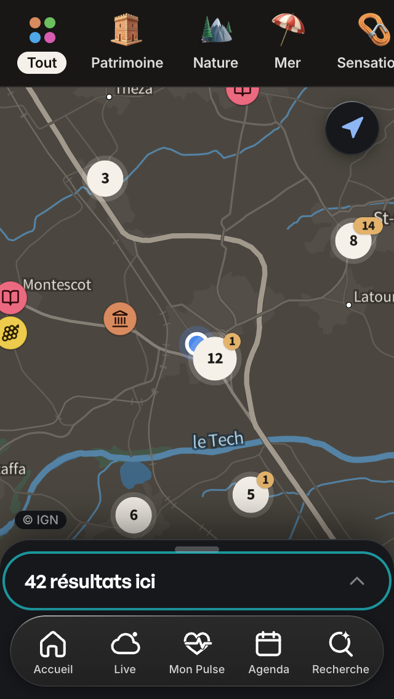
Chromium — 320 × 568
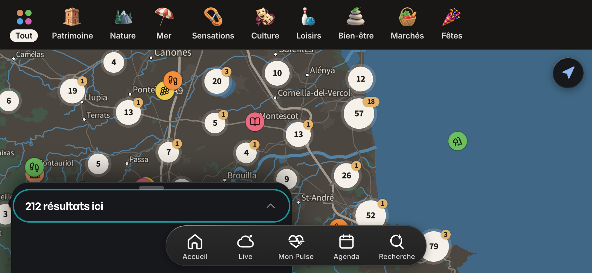
Chromium — téléphone couché 844 × 390
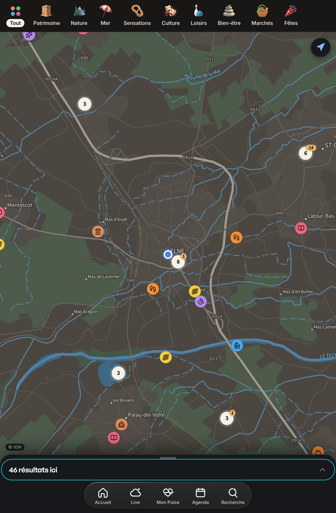
Chromium — tablette 744 × 1133
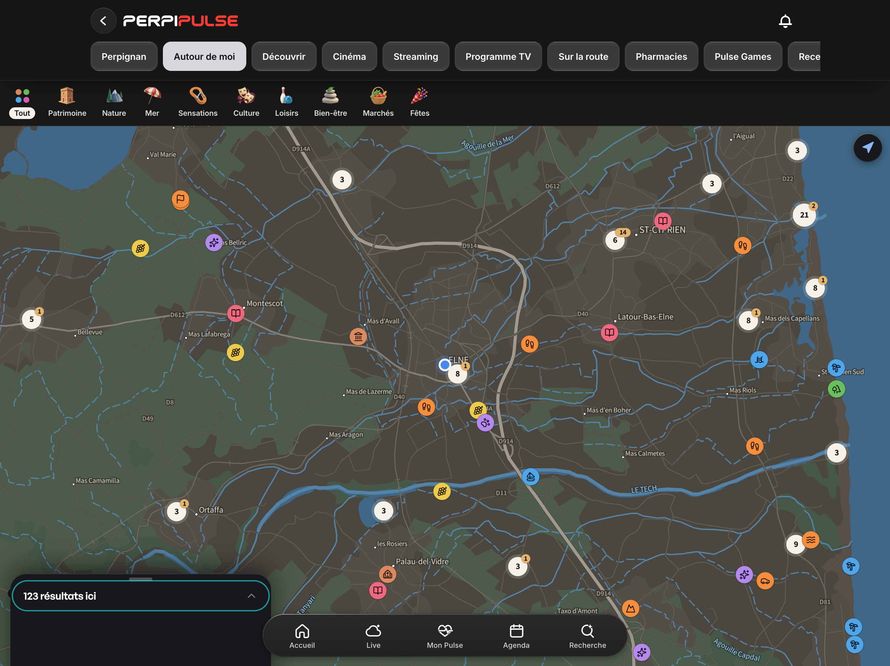
Chromium — tablette 1366 × 1024
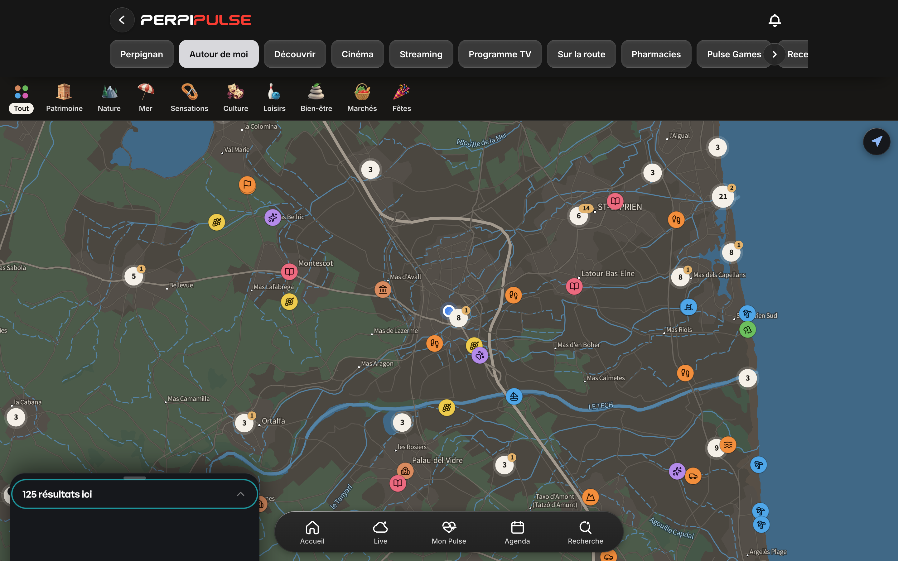
Chromium — ordinateur 1440 × 900
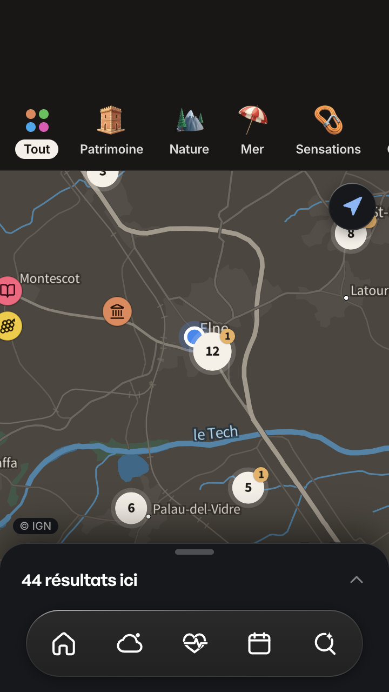
Chromium — app installée simulée, encoche
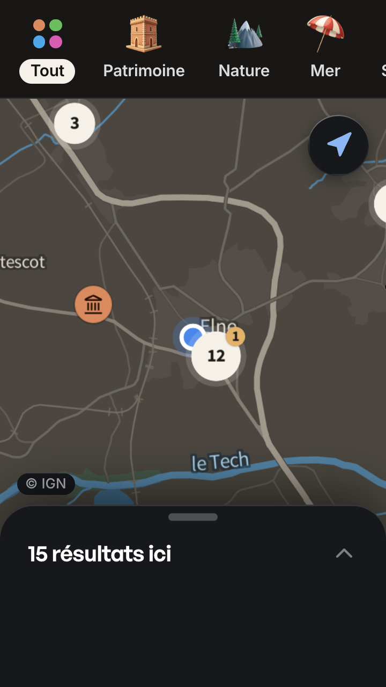
Chromium — texte à 130 %
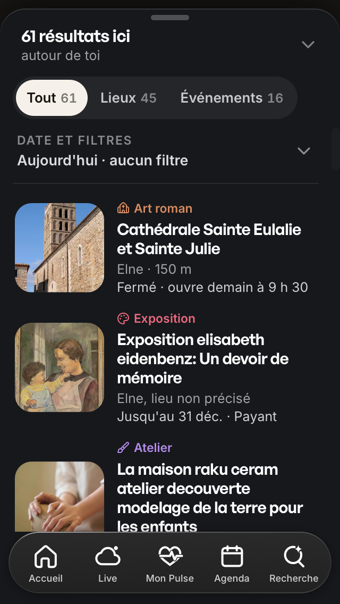
WebKit — 320 × 568
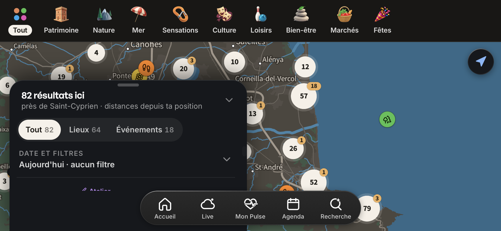
WebKit — téléphone couché 844 × 390
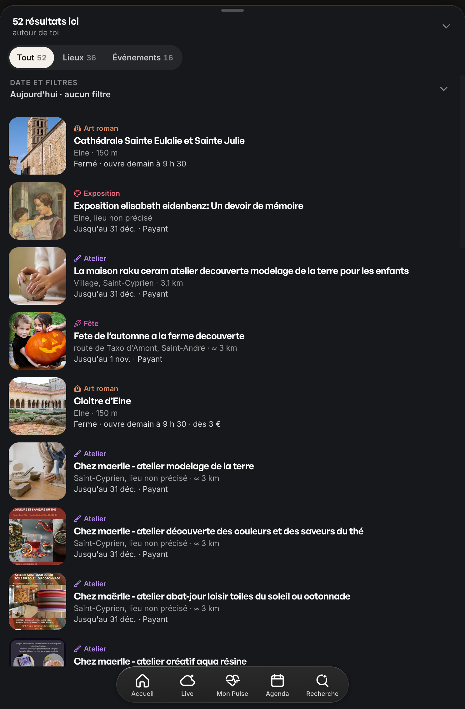
WebKit — tablette 744 × 1133
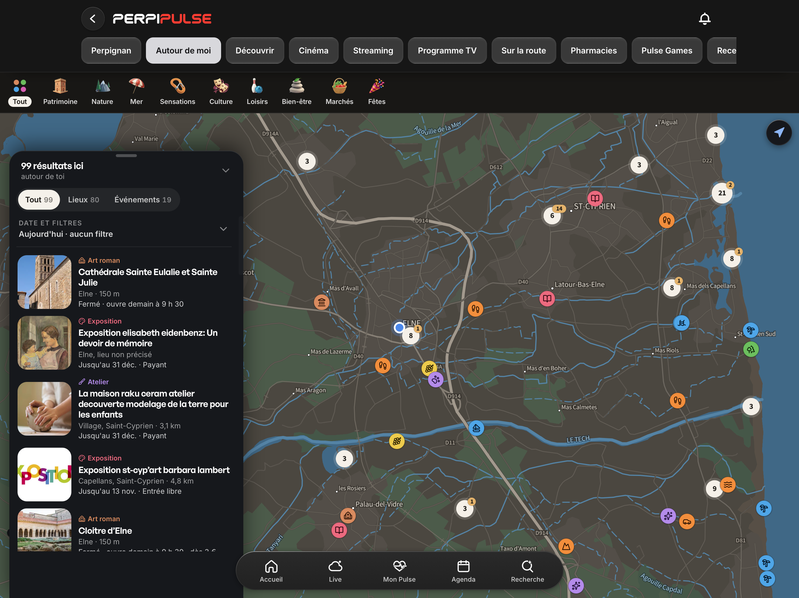
WebKit — tablette 1366 × 1024
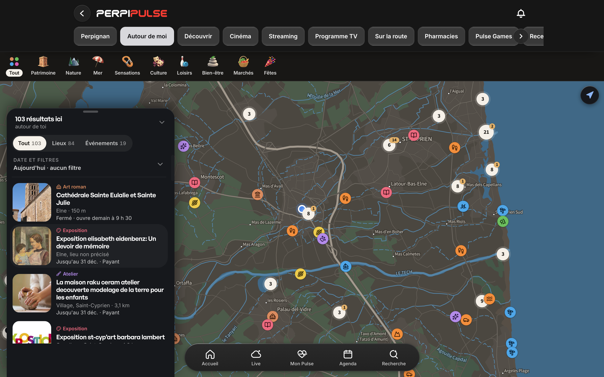
WebKit — ordinateur 1440 × 900
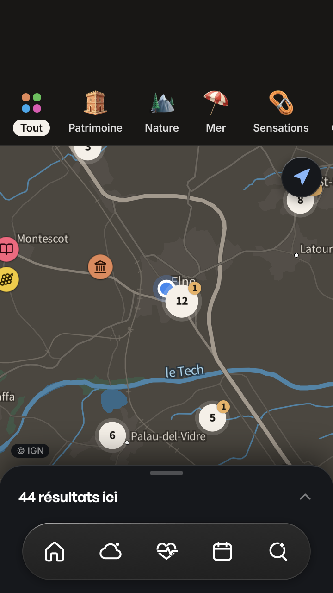
WebKit — app installée simulée, encoche
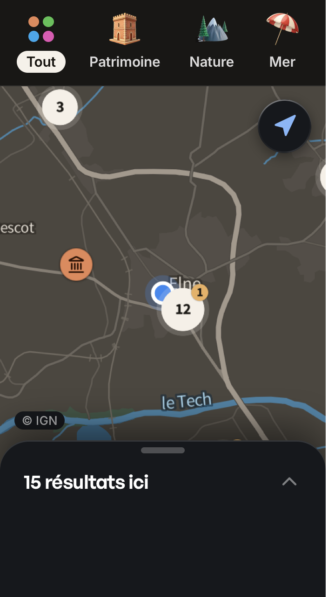
WebKit — texte à 130 %Limites restantes
- Rien n'a été essayé sur un vrai iPhone : ni Safari réel, ni VoiceOver, ni les zones sûres réelles, ni le retrait des barres de Safari.
- L'instantané est statique : données figées, et 58 fiches seulement s'ouvrent en détail.
- Découvrir liste encore les deux doublons traduits (AU-14 : inscription en base, hors de ce mandat).
- Un lieu à 2 m s'affiche « 50 m » (AU-16).